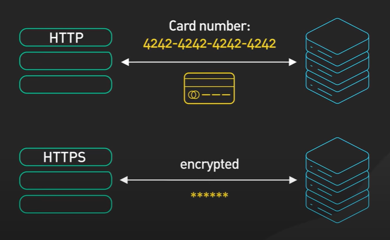
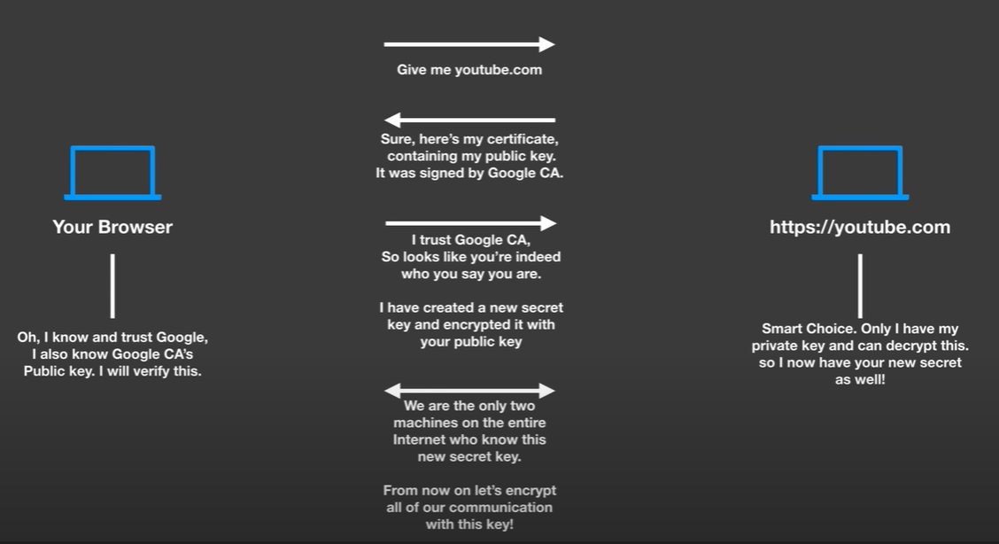

What is HTTP/HTTPS?
- HTTP (Hypertext Transfer Protocol):
- An application-layer protocol used for transmitting hypermedia documents, such as HTML.
- HTTP is the foundation of data communication on the World Wide Web.
- It is a stateless protocol, meaning each request from a client to server is independent, and the server does not retain user state between requests.
- HTTPS (Hypertext Transfer Protocol Secure):
- An extension of HTTP, where communication between the client and server is encrypted using TLS (Transport Layer Security) or SSL (Secure Sockets Layer).
- HTTPS ensures the confidentiality, integrity, and authenticity of data exchanged between the client and server.

How HTTP/HTTPS Works?
- HTTP:
- The client (usually a web browser) sends an HTTP request to the server, typically requesting a resource like a web page.
- The server processes the request and sends back an HTTP response, which usually contains the requested resource (e.g., an HTML file, image, etc.).
- HTTP operates over TCP (Transmission Control Protocol), usually on port 80.
- HTTPS:
- HTTPS follows the same process as HTTP, but before data is sent, the client and server establish a secure connection using SSL/TLS.
- This secure connection ensures that the data exchanged is encrypted, preventing eavesdropping and tampering.
- HTTPS typically operates over port 443.
Why HTTP/HTTPS is Used?
- HTTP:
- To request and receive web resources such as HTML pages, images, and other multimedia content.
- Facilitates communication between web browsers and servers on the internet.
- Supports various methods like GET, POST, PUT, DELETE, etc., to interact with resources on the server.
- HTTPS:
- To secure data transmission between clients and servers, protecting sensitive information (e.g., login credentials, payment details).
- Ensures that the data exchanged is not intercepted, tampered with, or forged by attackers.
- Provides authentication to confirm the identity of the communicating parties.
Where HTTP/HTTPS is Used?
- HTTP:
- Standard websites where security is not a major concern (e.g., public information sites, blogs).
- APIs and services that do not handle sensitive data.
- HTTPS:
- Websites that handle sensitive data (e.g., banking sites, e-commerce platforms, login pages).
- APIs and services that require data integrity and confidentiality.
- Websites that need to comply with security standards and regulations (e.g., PCI-DSS for payment processing).
SSL/TLS
- SSL (Secure Sockets Layer):
- SSL is a standard security technology for establishing an encrypted link between a server and a client—typically
a web server (website) and a browser or a mail server and a mail client (e.g., Outlook).
- TLS (Transport Layer Security):
- TLS is the successor to SSL and is more secure and efficient.
- It is a cryptographic protocol designed to provide secure communication over a computer network.
SSL/TLS Handshake Process (In-Depth)
- Step 1: Client Hello
- The client initiates the handshake by sending a "Client Hello" message, which includes the SSL/TLS version it supports,
the list of encryption algorithms, and a randomly generated number.
- Step 2: Server Hello
- The server responds with a "Server Hello" message, selecting the encryption algorithm from the list provided by the client
and sending its SSL/TLS certificate. This certificate contains the server's public key.
- Step 3: Server Certificate and Key Exchange
- The server sends its SSL/TLS certificate, and if required, a "Server Key Exchange" message.
The client verifies the certificate to ensure the server's authenticity.
- Step 4: Client Key Exchange
- The client generates a "pre-master secret," encrypts it with the server's public key, and sends it to the server.
Both client and server use this pre-master secret to generate the session keys used to encrypt the data.
- Step 5: Finished Messages
- Both the client and server send a "Finished" message, encrypted with the session key, indicating that
the handshake is complete and a secure session is established.
- Step 6: Secure Communication
- All subsequent communication between the client and server is encrypted using the session keys established during the handshake.
